Developing KEEN
This guide explains the code paths behind the application’s framework, evidence, risk and assurance workflows. It accompanies the Using KEEN and Administering KEEN. Paths are relative to the KEEN repository unless another project is named.
Architecture and repository map
KEEN uses a FastAPI application, SQLAlchemy models and Alembic migrations over PostgreSQL. Celery worker and beat use Valkey as broker/backend; Valkey also stores sessions, authorisation versions, caches and notification messages. The static UI uses HTML, ES modules, Bootstrap and D3, with shared MOSP design-system helpers.
services/api/app/main.py constructs the application, middleware and startup hooks. api/routes/__init__.py assembles domain routers. db/models.py contains the ORM models; db/session.py provides the engine, SessionLocal and the request database dependency. Schema history lives in services/api/alembic/versions, outside the app package.
core/config.py defines environment settings. core/managed_configuration.py resolves database-managed configuration. security contains authentication, sessions, OIDC, roles, permissions, CSRF, rich-text sanitisation and redaction. ingest contains source adapters and common persistence/SSRF helpers. mapping contains collection identity and rule evaluation. worker contains the Celery application and tasks. services contains changelogs, statistics, scheduling and domain helpers. storage/s3.py provides artefact storage behaviour.
services/ui/public contains HTML pages and their pages/*.js controllers. public/app.js wraps and re-exports the MOSP helpers. The UI Docker build expects mosp-design-system beside keen; keep the design-system version compatible with the application.
Follow a request through the application
The external HTTPS proxy forwards to keen-ui. nginx serves static files and forwards /api/ to keen-api with that prefix removed. A browser call to /api/v1/events therefore reaches /v1/events in FastAPI. The OpenAPI server prefix reflects this public path.
Middleware establishes request identity and applies permission and CSRF checks before the handler. Starlette runs inbound middleware in reverse registration order: inspect the registration order when changing it, to establish the actual execution sequence. Authentication must populate the request’s user before checks that rely on it.
Authentication uses a short-lived database session and detaches the user before passing the request onward. Handlers use their own get_db dependency. Do not attach a middleware ORM instance to a second session or leave a transaction open across slow external calls.
Pydantic payload models validate shape and restrict writable fields. Domain handlers validate relationships and permissions before writing. Use SQLAlchemy or bound parameters, sanitise rich text on the server, and record semantic changes through the shared entity-changelog service. Request audit logs and entity changelogs serve different purposes.
The request-size middleware checks the declared length. Enforce streaming request-body limits at the proxy alongside the declared-length check. Do not describe an nginx page-hiding rule as API authorisation.
Identity, sessions and authorisation
Local authentication, supported identity-provider flows and optional trusted-header authentication resolve to application users. Normal browser sessions are stored in Valkey and referenced by an HttpOnly cookie. Active-account checks and effective permissions remain server-side decisions.
Roles are admin, normal or inherit. Inherited roles are resolved from groups; permissions combine direct and group grants. Sessions cache an authorisation snapshot and a version. Access-changing operations must bump the affected authorisation versions so later requests recompute permissions. A cache miss must not become an allow decision.
The middleware enforces namespace and write permissions, with an admin-only fallback for unrecognised writes. Domain handlers also enforce precise permissions and relationship rules. A new route needs both a deliberate middleware policy and a route-level check; hiding its button is insufficient.
OIDC uses state, nonce and PKCE, a single-use login-state record, token exchange and signature/issuer/audience/expiry validation. Identity links use issuer and subject. General deployment settings control auto-link and provisioning behaviour; do not assume every IdP mode has the same policy. Do not authorise an account simply because a supplied email looks familiar.
The dedicated-hosting integration adds security/hosted.py and bootstrap_hosted.py. Hosted mode requires the configured issuer and owner subject, restricts existing sessions to the owner and disables alternative local/header sign-in paths. Bootstrap creates or binds the owner deliberately. Tenant identity checks apply before normal OIDC user resolution and remain necessary even with an Auth0-side action.
Cookie-based writes use the CSRF cookie/header check. Hosted mode additionally checks the exact origin, including WebSocket origin checks. Webhooks use their own authentication and must remain separately protected. Preserve host-only cookies and do not broaden them to a parent domain shared by customers.
Frameworks are application data
api/routes/frameworks.py exposes framework listing/upsert and the administrator node editor. The UI controller is pages/framework-editor.js embedded in admin.html. It manages framework metadata and Clause, Control and Custom nodes with descriptions, upstream URLs, ordering, scope and parent relationships.
ControlItem identities include framework, kind and reference. Clause nodes also maintain first-class FrameworkClause records used by clause views and ControlClauseLink relationships. Keep those representations consistent when modifying the editor. Parents must belong to the appropriate framework/category and form a valid hierarchy.
The editor treats framework slugs and node kind/reference as stable. Deletion checks children, clause links and mappings before allowing removal. Extend dependency handling deliberately when adding another relationship type.
Migration 0074_seed_frameworks seeds the bundled catalogues, including KEEN-AF:1.0. Bundled JSON supplies migration and build input. Everyday edits use the web interface. Seed logic preserves existing populated administrator content where specified. Do not fetch mutable upstream standard text during a migration or assume a catalogue grants rights to licensed normative wording.
Evidence definitions and managed configuration
An evidence definition combines a source adapter, collection input, matching conditions and framework targets. The main API implementation is api/routes/managed_configurations.py; the editor is pages/evidence-config.js within Admin → Evidence sources & rules.
ManagedConfiguration stores named documents and their versions. ManagedConfigurationRevision stores prior documents. core/managed_configuration.py reads a database document first and falls back to a shipped input only when no database document exists. The migration chain initialises these documents so migrated installations use PostgreSQL as the working source of configuration.
PUT /v1/admin/evidence-definitions/{rule_id} validates the adapter, input section, stable collection key, rule identity and targets. For a collection-specific definition it locks configuration documents in a consistent order, checks both submitted versions and commits the input and rule revisions together. A 409 tells the caller to reload and reconcile. Preserve this transaction boundary; publishing a query without its matching rule is a partial update.
Source-wide definitions use the selected source without a collector condition. Collection-specific definitions obtain their collector identity through shared mapping helpers. Source identity and collection identity are distinct: several queries can emit events with the same adapter source.
The source catalogue exposes enablement and observed activity without sending credentials to the browser. The BookStack catalogue makes server-side requests using configured credentials. The JSON panels are for collection and adapter settings, with secret-like content rejected; actual credentials remain environment settings.
Rule parsing, matching and preview
mapping/rules.py parses the managed rules document and evaluates events. Conditions include exact source/system/actor/action/outcome/severity/label values, supported regex fields, collection identity and BookStack-specific selectors. Filled conditions combine as AND. Label matching also considers values extracted from supported payload structures.
Rules contain IDs, enabled state, conditions, targets and confidence. Targets identify a framework and reference; one rule can map to several frameworks. Admin validation checks regex and target validity, while the common parser is shared with runtime evaluation. Keep preview and ingestion semantics aligned when adding a field.
The editor supports sampled preview and an explicit predefinition path when no events exist. Use preview to diagnose rule matching. Enforce authorisation separately and assess compliance through evidence review. Suggested controls remain proposals for an administrator to accept.
Ingestion, artefacts and historical mapping
Pull adapters and incoming webhooks normalise source data into events. ingest/common.py handles shared persistence, deduplication, redaction and artefacts. Stable source/external identifiers prevent duplicate events. Collection provenance must survive normalisation so a collection-specific rule can identify its own evidence.
Keep outbound requests behind the shared URL safety checks, TLS validation and restricted redirect behaviour. Administrator-controlled URLs can still reach dangerous network locations if SSRF protection is weakened. Webhooks must preserve secret validation, replay controls and fail-closed rate limits.
Artefacts have stored references and integrity metadata. In the hosted integration, S3 writes are conditional, and stored references include object version information for retrieval. The runtime uses its tenant role and must not accept a reference to an arbitrary bucket. Do not discard version information when generating a download or presigned URL.
Saving a rule can queue historical evaluation. Rule-backfill records persist progress; worker tasks process jobs and beat schedules recovery. Track the backfill job’s completion separately from the configuration transaction.
The broader remap action is additive and can include already-mapped events. Stale-rule-mapping preview/prune is a distinct path: it limits the review batch, rechecks the current rule set and preserves manual/imported mappings. Test rule tightening, deletion, concurrent edits and cancellation separately from straightforward creation.
Control-evidence statistics and caches are maintained separately from event storage. A discrepancy can arise from stale derived data as well as missing evidence. Use the shared statistics service when adding an endpoint.
Risk register, library and KEEN Assurance Framework
api/routes/risks.py handles scenarios and control links. api/routes/risk_register.py adds register views, ratings, thresholds, CSV exchange and reusable templates. Risk is the shared scenario entity. The editor, register and heatmap use the same inherent and residual likelihood/impact fields, each constrained to 1–5, with scores calculated as their product.
RiskLibraryEntry stores reusable scenario text, CIA associations, treatment guidance and suggested assessment data. The library supplies templates for creating assessments in the risk register. Creating from a template produces a reviewable risk; subsequent template changes do not automatically rewrite that assessment.
The frontend loads the chosen template, example ratings and suggested asset. Risk creation receives library_template_id. The server retrieves suggested KEEN-AF control references from the stored template, filters them against remaining controls and writes those links under KEEN-AF:1.0. This also works when the active framework is different, preserving separate framework-specific links.
Migrations 0076_seed_assurance_risk_library, 0077_unified_risks_assets and 0078_library_control_mappings supply the library, unified risk/asset behaviour and template mappings. Use their actual revision identifiers when inspecting migration history; filenames and revision IDs are not always identical.
CSV import creates new scenarios and validates the complete file before committing. It has size/row limits and validates ownership, ratings and control references. Export protects spreadsheet cells against formula interpretation. Preserve whole-file rejection and formula-safe output when changing the schema.
Documents, people and assurance records
Native documents support folders, types, tags, rich-text content, immutable content revisions, hashes and comments. The UI’s update includes expected_content_version to detect concurrent content edits. Preserve server-side sanitisation and version checks when extending the document editor.
People and personnel-assurance records are separate from login identities. A person can have no KEEN account and still have a role, assets, training or other assurance records. A vendor can supply assets; assigning an asset to a vendor moves its single supplier relationship. Do not turn an assurance record into an implicit authentication grant.
ISMS objectives, measures, metrics, assets, access records and meetings link assurance activity to the framework. The access matrix records intended or assessed access. External systems enforce their own access permissions. Scheduled audits and metric tasks run through the worker and need deterministic, idempotent behaviour.
Frontend conventions and documentation
Pages are static HTML with an ES-module controller. Use the shared API helpers for credentials, errors and CSRF headers. Escape plain values with esc, validate external links with safeExternalHref, and render rich text through the shared sanitiser. D3 labels should use text content using the DOM text API.
Carry the active framework through relevant queries and links. Avoid treating global objects, such as the underlying risk scenario, as though switching framework creates another object. Keep accessible labels, status messages and keyboard interaction when adding editors.
The online manuals use static HTML, CSS, local search and bundled screenshots. Open Documentation in KEEN to browse them under /help/.
Update the handbook source fragments and run the documentation build script to regenerate navigation, search and the help pages served by KEEN. Keep source instructions and rendered pages in sync. Screenshots illustrate the interface; each procedure explains the action and expected result.
Develop and verify a change
- Identify the authoritative model, route, permission, UI controller and migration for the feature.
- Add schema changes through Alembic and update models together. Preserve existing data and relationships.
- Validate payloads and enforce permissions at the route and middleware boundaries.
- Keep multi-record updates transactional and use version checks where another editor can race.
- Record semantic changes, invalidate derived data and bump authorisation versions when relevant.
- Update the corresponding UI and manual from the actual behaviour.
- Test the consequential boundaries: unauthorised access, concurrent edits, invalid relationships, replay, rollback and historical data handling.
Use PostgreSQL integration tests for database-specific behaviour, including JSONB, row locking, uniqueness and transaction semantics. SQLite tests can cover isolated helpers but cannot prove PostgreSQL concurrency. For hosted changes, include negative cross-tenant identity and storage checks using separate test tenants.
Rehearse migrations and restores in a disposable test installation. Pin deployment dependencies and record the source/image versions used in a release. Full UI image builds require the matching mosp-design-system directory beside keen.
Documentation edition: 2 October 2026
Ingester contracts and evidence semantics
All collectors ultimately supply an event timestamp, source, system, actor, action, outcome, severity, summary, provenance and normalized payload to the evidence persistence layer. action is the activity recorded by the producer; outcome is the producer’s result label. The mapping engine compares the selected conditions against those fields. Exact conditions are case-sensitive and combine with AND. Regex conditions are an advanced matching option. There is no universal outcome enumeration.
For a new integration, inspect real records, choose stable activity/result values and document their meaning. Populate a result only when the source supports the claim. Guided API integrations extract JSON-pointer values or constants and can apply explicit value translations. Built-in adapters define their normalization in code or managed collection settings. The agent’s parsers define their activity and result labels in keen-agent/cmd/keen-agent/parser.go.
The user-facing rule editor should start with a real event. Its “What happened?” and “What was the result?” labels retain the underlying action and outcome keys. Datalists show recent observed values, blank optional fields permit any value, and preview includes concrete explanations of exact-field mismatches. Extra predicates remain available for specialized rules. Event selection and mapping never execute the named action.

Diagram source (Mermaid)
flowchart TB
subgraph Collection["Choose a collection method"]
A["Built-in adapters: Loki, Jenkins, RSS and others"]
B["Guided API integrations"]
C["KEEN Agent or OTLP collector"]
D["Authenticated webhooks"]
end
A --> N["Validate, normalize and redact"]
B --> N
C --> N
D --> N
N --> E["Event and provenance in PostgreSQL"]
N --> S["Evidence artifact in local or S3 storage"]
E --> R["Mapping rules select matching events"]
S --> V["Artifact reference and SHA-256"]
V --> E
R --> F["Framework controls"]
F --> U["Review, questions and audit samples"]
KEEN Agent protocol and persistence
The standalone Go module is keen-agent/. Configuration is strict YAML. File readers use directory-relative, no-symlink opens and regular-file checks. Journal reads call the fixed /usr/bin/journalctl binary with validated arguments. Agent parsers have no script hooks or remote execution channel.
The agent uses OTLP/HTTP JSON for logs. Its KEEN-specific attributes are an optional enrichment convention, so a JSON-configured Alloy or another collector can use the same receiver. See the OTLP contract, limits and alternate collector configuration. Protobuf/gRPC, metrics and traces are outside this receiver’s initial scope.
app/agents/otlp.py validates bounded OTLP JSON and converts it into AgentEvent. Generic record IDs are deterministic; a supplied keen.event.id must be a UUID. Canonicalization makes attribute order irrelevant. app/api/routes/agents.py authenticates a scoped bearer credential, applies rate limits, reads a bounded body with a deadline, then takes the agent row lock and rechecks its credential. Revocation and ingestion serialize on that lock.
Agent registration is session-admin only. Only the exact log and heartbeat paths bypass browser session/CSRF handling; their own bearer authentication is mandatory. Demo mode blocks ingestion and credential mutation. The registered name supplies the trusted KEEN event system; resource attributes remain client claims.
The receiver checks for an existing event identified by agent ID and event UUID. Matching content is accepted idempotently; different content with the same identity is rejected. New events use store_event_with_artifact(commit=False) so the complete batch commits together. Any invalid record prevents acceptance of the batch. Each artifact persistence attempt gets a fresh object key, which supports the local write-once and hosted S3 conditional-write backends. Storage and PostgreSQL do not share a transaction: a failed database transaction can leave an unreferenced artifact. Retention-aware operational cleanup handles those objects.
The canonical received-record digest supports replay checks. Artifact SHA-256 is calculated after server redaction/privacy handling and describes the stored bytes. These digests can differ because they cover different representations. Neither proves that the originating host reported a true fact.

Diagram source (Mermaid)
flowchart TB
L["Selected log files or journal"] --> P["Parse and redact"]
P --> Q["Atomic local transaction: UUID, record and checkpoint"]
Q --> T["Send OTLP JSON over verified HTTPS"]
T --> A{"Valid scoped credential and batch?"}
A -->|Yes| D{"UUID already stored?"}
D -->|Same content| OK["Return success"]
D -->|New| S["Store artifact, event and mappings; commit"]
S --> OK
OK --> R["Remove acknowledged records from queue"]
A -->|Permanent rejection| H["Pause delivery; retain records"]
D -->|Conflicting content| H
T -->|Network error or retryable response| B["Back off and retry the same UUIDs"]
B --> T
Test ingestion and mapping changes
Run the Go race tests and vet checks with make test in the agent module. Receiver tests in services/api/tests/test_keen_agent.py cover authentication, expiry, revocation, whole-batch rollback, duplicate/conflicting UUIDs, compression/body limits, redaction and plain-language mismatch explanations. Keep source mappings under tests in test_managed_configuration.py and test_integration_builder.py.
Before release, test your real PostgreSQL and storage backend, reverse proxy, Valkey failure behavior and the target distribution’s journal/log permissions. Exercise credential expiry, an unavailable receiver, an inode rotation and a full queue. Inspect a captured event, its retained artifact and its selected control mapping. Documentation diagrams have editable Mermaid sources under portal/docs/help-source/diagrams/; rendered SVGs ship locally with the help pages.
Structured field conditions
The shared evaluator applies when.fields in ingestion, preview and historical mapping. All conditions are ANDed. Paths contain literal dictionary keys, with no expression execution or array traversal. Limits: 20 conditions, eight keys per path, 256 characters per key and 4,096 per match value.
when:
source: keen-agent
fields:
- path: [fields, _SYSTEMD_UNIT]
operator: equals
value: keen-agent.service
Operators: equals, starts_with, contains, exists. A key containing a dot stays one key: ["fields", "service.name"]. Missing fields fail matching. Scalars compare as text; booleans and numbers use JSON notation. Invalid conditions fail validation. Heartbeat counters are optional typed fields; unknown keys remain rejected.